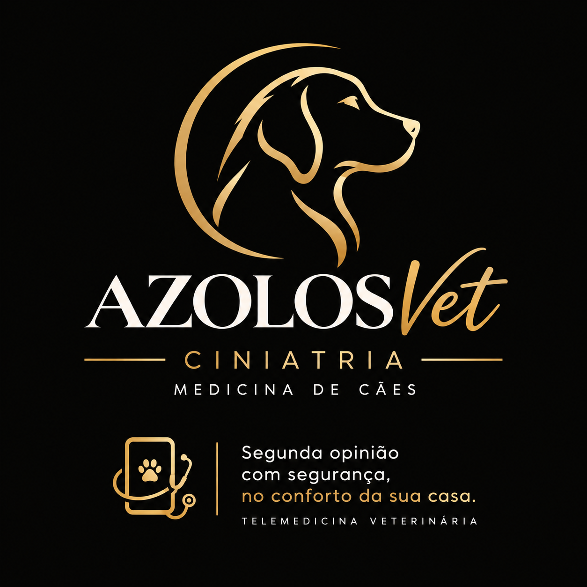

Segunda opinião
Revisão do caso e das informações disponíveis para uma nova avaliação clínica.
Uma avaliação dedicada à saúde do seu cão para ajudar você a compreender melhor exames, diagnósticos e possibilidades de tratamento.
Falar pelo WhatsAppComo funciona
Uma segunda opinião pode ajudar a organizar informações, esclarecer dúvidas e entender os próximos passos diante de um quadro clínico.
Revisão do caso e das informações disponíveis para uma nova avaliação clínica.
Avaliação de exames laboratoriais e de imagem apresentados durante a consulta.
Orientação sobre investigação complementar e necessidade de avaliação presencial.
A segunda opinião pode ser especialmente útil quando você deseja compreender melhor um diagnóstico, revisar exames ou conversar sobre possibilidades de investigação e tratamento.
Você recebeu uma explicação, mas ainda tem dúvidas sobre o que os exames e sinais clínicos significam.
Você quer compreender melhor a proposta terapêutica e quais informações sustentam aquela conduta.
Há exames já realizados ou uma evolução clínica que você gostaria de discutir com outro olhar.
O primeiro contato é feito pelo WhatsApp. A possibilidade e a forma do atendimento por telemedicina dependem das normas profissionais aplicáveis e da elegibilidade do caso.
Pós-graduada em Clínica Médica Veterinária
Mestre em Clínica Médica Veterinária
Atendimento voltado à medicina de cães, com foco em uma avaliação organizada do histórico clínico, exames e informações disponíveis.
“Nem sempre você precisa de mais informação. Às vezes, precisa de outro olhar para compreender melhor a informação que já tem.”
A experiência de cada tutor é importante. Este espaço poderá reunir depoimentos autorizados de clientes sobre o atendimento da AZOLOS Vet.
“Seu depoimento poderá aparecer aqui.”
Nome do tutor Cliente AZOLOS Vet“Conte como foi sua experiência com nosso atendimento.”
Nome do tutor Cliente AZOLOS Vet“Sua experiência pode ajudar outros tutores a conhecerem nosso trabalho.”
Nome do tutor Cliente AZOLOS VetOs depoimentos publicados devem ser reais e utilizados com autorização do tutor. Informações pessoais e dados clínicos somente serão utilizados com a autorização necessária.
Sim. Os exames e informações disponíveis podem ajudar na organização da avaliação, conforme orientação recebida pelo WhatsApp.
Não. A modalidade depende das normas profissionais aplicáveis e da avaliação de elegibilidade do caso. Situações de urgência ou emergência devem ser encaminhadas para atendimento presencial.
Sim. Quando houver necessidade de complementar a investigação, poderão ser recomendados ou solicitados exames, conforme o caso.
Entre em contato pelo WhatsApp durante o horário de atendimento: aos sábados.
Entre em contato pelo WhatsApp para saber como funciona a avaliação.
(22) 99967-4005Atendimento: aos sábados.
Agendar pelo WhatsAppA telemedicina veterinária está sujeita às normas profissionais aplicáveis e à avaliação de elegibilidade do caso. Situações de urgência ou emergência devem ser encaminhadas para atendimento presencial.